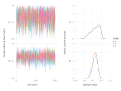
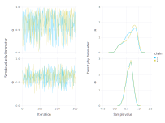

TuringPlots
This package defines plotting functions for Chains objects, such as
chnChains MCMC chain (1000×14×3 Array{Float64, 3}):
Iterations = 1:1000
Thinning interval = 1
Chains = 1, 2, 3
Samples per chain = 1000
parameters = α, θ
internals = acceptance_rate, hamiltonian_energy, hamiltonian_energy_error, is_accept, log_density, lp, max_hamiltonian_energy_error, n_steps, nom_step_size, numerical_error, step_size, tree_depth
Summary Statistics
parameters mean std naive_se mcse ess rhat
Symbol Float64 Float64 Float64 Float64 Float64 Float64
α 0.6388 0.2432 0.0044 0.0047 2418.1448 1.0005
θ 0.6226 0.1339 0.0024 0.0025 2750.9039 1.0008
Quantiles
parameters 2.5% 25.0% 50.0% 75.0% 97.5%
Symbol Float64 Float64 Float64 Float64 Float64
α 0.1249 0.4674 0.6713 0.8444 0.9828
θ 0.3514 0.5356 0.6302 0.7202 0.8574
These objects are typically created with sample from Turing.jl. The plots in this package are based on Gadfly.jl.
Parameters and chains
To plot individual parameters, use plot. This extends Gadfly, so you can pass Gadfly elements like Geom.density and Guide.ylabel:
using Gadfly
using TuringPlots
plot(chn, x = :parameter, color = :parameter, Geom.density, Guide.ylabel("Density"))
To show only one parameter, use filter:
plot(chn, x = :parameter, filter = ([:parameter] => ==(:α)),
Geom.density, Guide.ylabel("Density"))This works because the Chains object is converted to a DataFrame of the shape
| parameter | chain | id | value |
|---|---|---|---|
| α | 1 | 1 | ... |
| α | 1 | 2 | ... |
| ... | ... | ... | ... |
| α | 2 | 1 | ... |
| α | 2 | 2 | ... |
| ... | ... | ... | ... |
| θ | 1 | 1 | ... |
| θ | 1 | 2 | ... |
| ... | ... | ... | ... |
| θ | 2 | 1 | ... |
| θ | 2 | 2 | ... |
and the filter is applied to this DataFrame via filter. See the DataFrames.jl documentation for details. So, to plot only parameter :α, use
filter = ([:parameter] => ==(:α))To plot only the first chain, use
filter = ([:chain] => i -> i == 1)Or, for the first two chains
filter = ([:chain] => i -> i < 3)Sample values and densities
To plot, for all parameters, the sample values per iteration and the densities, use plot_parameters:
plot_parameters(chn)
The same filtering as above works here too. Showing only the first 300 samples and 2 chains:
plot_parameters(chn, filter = ([:id, :chain] => (i, c) -> i <= 300 && c <= 2))
Multiple models
Passing a NamedTuple as the first argument is interpreted as names and MCMCChains.Chains. This can be used to plot multiple models:
models = (A = chn, B = chn2)
plot(models, x = :value,
color = :chain,
xgroup = :parameter, ygroup = :model,
Guide.xlabel("Parameter"),
Guide.ylabel("Model"),
Geom.subplot_grid(
Geom.density,
Guide.xlabel(orientation=:horizontal)
)
)Bars for quantiles
Gadfly.plot(chn, y = :value,
filter = ([:parameter] => ==(:α)),
Gadfly.Guide.title("Density with bars showing the central 90 % credible interval"),
Gadfly.Scale.x_continuous(minvalue=0, maxvalue=1.2),
Gadfly.Scale.y_continuous(minvalue=0, maxvalue=2.2),
Gadfly.Guide.xlabel("Sample value"),
Gadfly.Guide.ylabel("Density"),
Gadfly.Stat.xticks(ticks = collect(0.2:0.2:1.0)),
density_ci(quantiles = [0.05, 0.95])
)plot(chn, y = :value,
Scale.x_continuous(minvalue=0, maxvalue=1.2),
Scale.y_continuous(minvalue=0, maxvalue=2.6),
Guide.title("Densities with bars showing the central 90% credible interval"),
Guide.xlabel("Parameter"),
Guide.ylabel("Chain"),
Stat.xticks(ticks = collect(0.2:0.2:1.0)),
xgroup = :parameter, ygroup = :chain,
Geom.subplot_grid(
density_ci(quantiles = [0.05, 0.95]),
Guide.xlabel(orientation=:horizontal),
)
)models = (A = chn, B = chn2)
plot(models, y = :value,
Scale.x_continuous(minvalue=0, maxvalue=1.2),
Scale.y_continuous(minvalue=0, maxvalue=2.6),
Guide.title("Densities with bars showing the central 90% credible interval"),
xgroup = :parameter, ygroup = :model,
Guide.xlabel("Parameter"),
Guide.ylabel("Model"),
Geom.subplot_grid(
density_ci(quantiles = [0.05, 0.95]),
Guide.xlabel(orientation=:horizontal)
)
)density_ci doesn't support multiple colors yet and the scales have to be manually set.